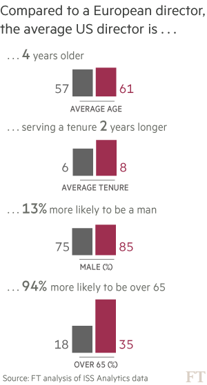

Barry Diller, the billionaire media mogul, has taken more than $12m of personal flights on a company-owned private jet since 2005, the highest total among US executives who access corporate aircraft for fare-free holidays and other non-business trips.
Most of the largest US corporations own or lease private jets to fly top managers to business meetings, but the contentious practice of companies paying for executives to use the planes for personal trips has come under pressure since the 2008 financial crisis.
The Corporate Jet Files, an analysis of 1,000 securities filings by the Financial Times, has found that a significant number of corporations are still footing the bill for their executives to take personal flights on corporate jets, sometimes accompanied by family and friends.

Mr Diller, as chairman of Expedia, the online travel agent, and InterActiveCorp, the internet conglomerate behind dating app Tinder, has consistently taken personal flights worth more than $1m a year on a jet co-owned by the companies.
In 2014, the most recent year for which public filings are available, the bill for Mr Diller’s personal use of corporate aircraft was $1.7m, or roughly $4,500 a day.
The companies, which paid for the flights, declined to comment, but in a recent securities filing IAC said Mr Diller was “required to travel, both for business and personal purposes, on corporate aircraft”.
Many of the companies contacted by the FT cited security concerns as a reason for demanding that executives use corporate jets even for personal travel.
The FT’s findings show that a small group of companies — roughly 10 per cent of the S&P 500 — account for about two-thirds of total spending on personal use of corporate aircraft.
The league tables of the biggest spenders are dominated by groups where the founder or a family exerts significant control.
Mark Zuckerberg, who billed Facebook for a combined $1.2m of personal flights in 2013 and 2014, is one of the top 10 spenders in both years.
Rupert Murdoch and his son James together spent almost $1m flying on the Twenty-First Century Fox jet over the same period.
Oldest and youngest boards and directors of companies with a $50bn+ market cap.
The RJR Airforce
When Ross Johnson was chief executive of RJR Nabisco, the tobacco-to-biscuits conglomerate, in the 1980s, he sent Rocco, his pet dog, on a 2,000-mile flight aboard the company jet.
According to the story, made famous in Barbarians at the Gate, a book about the leveraged buyout of the company in 1988, Mr Johnson had been playing in a golf tournament in a Palm Springs resort when the German shepherd bit a security guard, prompting concern that the dog would be quarantined, or worse.
Rocco was smuggled on to one of RJR Nabisco’s 10 private jets, listed as the passenger “G Shepherd” and flown from California to the group’s headquarters in Winston-Salem, North Carolina, with an executive as his chaperone.

It would be hard to find the head of a publicly listed group doing something so egregious in 2016, but the total spent by S&P 500 companies on personal corporate jet flights was still roughly $40m a year in 2013 and 2014.
This is a relatively small amount when compared with the billions of dollars spent on salaries and bonuses, but it is big enough to be seen by some investors as a sign of poor corporate governance.
The Rocco episode was not the only instance of excess aboard Nabisco’s fleet of jets, known as the RJR Airforce and operated by 36 corporate pilots. For many, the story — which some have disputed — was the high-water mark of corporate largesse, and one of the catalysts for a decades-long push to crack down on overspending at public companies.
Corporate jets are just one of many perks granted to executives by compliant boards over the years, alongside rent-free accommodation and memberships of country clubs. They have loomed largest in the public consciousness, a gleaming symbol of corporate machismo, exclusivity and inequality.

“There is a question as to why it is that the people who are the most highly paid at a company are the ones who receive an array of free perks,” says Carol Bowie of Institutional Shareholder Services, which advises investors on how to vote at annual meetings. “You can’t disguise the fact that these people are those best able to afford to pay for such things themselves.”
Crisis flashpoint
Private jets became a flashpoint in the public anger that followed the financial crisis of 2008, with US politicians lashing out at executives from GM and Chrysler after they used corporate aircraft to travel to Washington to ask for a multibillion-dollar taxpayer bailout. AIG, the insurer, also came under fire for continuing to operate a fleet of jets after receiving $180bn of bailout funds.

The outrage caused many companies to scale back personal use of corporate aircraft, as did the introduction of new disclosure rules a decade ago, which force public corporations to disclose how much is spent on the perk. The US Securities and Exchange Commission ushered in the new rules in 2006, amid fears that companies were in effect paying executives more than they were telling investors, by handing out freebies such as private jet flights, lump sums to pay their taxes and luxury golf memberships.

Explore company and director data tables on your own
About the data
Most companies in the S&P 500 still operate private jets or lease them from a third party on the premise that commercial air travel in the US, which is plagued by delays and long lines at security, is uneconomical for executives who are paid millions of dollars a year.
Many, however, have forbidden executives from using the aircraft for personal trips, or dramatically reduced the amount they can spend on the perk. Goldman Sachs, for instance, does not allow Lloyd Blankfein, its chief executive, to use the company jet for his holidays, while Jamie Dimon, his counterpart at JPMorgan, spent less than $50,000 on personal flights aboard company jets in 2014.
Some bankers still take advantage of the benefit, though: almost $240,000 was spent on a single round-trip to Australia for James Gorman, chief executive of Morgan Stanley, to attend his mother’s funeral.
Continued largesse
The FT’s investigation shows there are still a significant number of companies spending large sums on personal flights, and in many cases much more than they were before the financial crisis.
Mr Diller, chairman of InterActiveCorp and Expedia, for instance, took personal flights worth $834,000 on the company jet in 2005, almost half the $1.7m worth of flights he took in 2014. The amount spent on providing free personal flights by Leucadia, owner of investment bank Jefferies, to its executives has jumped from $435,000 in 2005 to about $1m a year.
Arthur Kohn, a lawyer at Cleary Gottlieb who advises companies on corporate aircraft, says greater scrutiny of perks by investors and the public has prompted many groups to rethink their policies.
“Nevertheless, personal use of corporate aircraft is one of the perks that has been most resistant in the face of criticism,” he says. “My experience suggests that many companies continue to offer it.”
The FT’s analysis has found that it is not necessarily executives at the largest companies groups who are the most egregious biggest users of company jets for personal travel. Tim Cook, Apple’s chief executive, does not receive the perk, although the company did buy his predecessor, the late Steve Jobs, a personal jet that cost $90m in 1999. None of the executives at Microsoft receives the benefit, either.
Of the top 20 groups in the S&P 500, just three — Google, Facebook and Procter & Gamble — appear in either the top 10 list of biggest-spending companies or executives.
Conversely, several relatively small companies were big spenders. Freeport-McMoRan, the copper and gold producer, ranks as number 354 in the S&P 500 for market value but spent $1.2m on personal jet travel in 2014 — more than any other company. Constellation Brands, the beer and wine group, and DaVita Healthcare Partners, the kidney dialysis group, also feature in the top 10.
Otherwise, the ranks are dominated by companies where the founder or their family still exerts influence, such as Tyson Foods, the largest US meat processor, which is chaired by John Tyson, grandson of the company’s founder. In 2013 and 2014, Mr Tyson and executives took personal flights aboard the company aircraft worth $2.3m.
Comcast, the cable and broadcasting group founded by Ralph Roberts, and now run by his son, Brian, spent $2.2m on personal private jet flights during the same period.
Ms Bowie of the ISS says high spending on personal use of corporate jets is a “red flag” — a warning sign that executives are treating a public company as if it were a family-owned enterprise, or that the board of directors does not exert enough control. “Where you find misuse is often at companies where there seems to be in the C-suite a certain sense of entitlement,” she says. “Investors pay attention to it as more of a sign — not the disease — but an indication that the CEO is too powerful.”
David Yermack, a professor at the Stern School of Business at New York University, conducted an analysis in 2005 that established a link between aircraft perks and inferior shareholder returns. Mr Yermack analysed a decade’s worth of data on 237 large companies and found those that disclosed corporate aircraft benefits underperformed market benchmarks by more than 4 per cent a year on average.
This chief executive perk, where disclosed, “is associated with severe and significant underperformance of their employers’ stocks”, Mr Yermack said.
Security benefit
Many of the companies contacted by the FT said it was company policy for top executives to travel by corporate jet due to security concerns, although none would disclose whether it had been subject to specific threats.
Privately, companies said the perk was a reflection of the fact that the line between a chief executive’s professional and personal life was often blurry, and that travelling on a private jet allowed them to discuss business without the risk of being overheard by other passengers. “Most executives argue that it enhances efficiency, that it gets them from A to B more quickly, and facilitates the discussion of business in transit,” says Mr Kohn.
Longest and shortest tenures of boards and directors of companies with a $50bn+ market cap.
However, compared with other corporate freebies, personal jet travel is expensive. First, the sums disclosed by companies do not reflect the true cost; they are only required to publish the “incremental” cost — the price of a specific flight — which they calculate using a formula that works out between $5,000 and $7,000 per hour. This ignores the fixed cost of owning or leasing the jet, or buying a new one when it needs to be replaced.
Second, the perk often results in big tax bills for companies — which can eclipse the cost of the flight itself. Whereas corporations can use deductions to offset executives’ salary or bonuses, they cannot do the same for personal jet travel.
Last year, Comcast informed its investors that it had been denied a tax deduction in 2014 of about $3.75m — far more than the $1.2m it spent on the flights — because of personal use of company aircraft by its executives and their guests. By allowing their executives to use the plane for personal trips, the company missed out on deductions to which it would have otherwise been entitled.
Not all executives are fans. Although Warren Buffett uses Berkshire Hathaway aircraft for business travel, he also has a personal membership of NetJets, the pay-per-flight private jet operator that Berkshire owns, for all other trips.
David Pyott, the former chief executive of Allergan between 1998 and 2015, says he “consistently resisted a corporate jet or even a jet share” during his tenure at the company.
“I used to joke with investors, that even as a Scotsman I only wasted my personal money on a jet share — certainly not the company’s.”